Lecture Notes 12: Intro to Arrays
Objectives
By the end of this module, for simple programs with real numbers, you will be able to:
- Demonstrate ability to declare unidimensional
arrays and populate them, with integer and doubles.
- Demonstrate knowledge of array limits, length.
- Demonstrate simple operations like printing and copying.
- Demonstrate mental execution and debugging of
array-based programs.
- Identify new syntactic elements related to the above.
Before Starting
- Read Sections 12.01 to 12.03 in the Codio Course
If you do not have your Codio course ready, use any text editor or simple IDE. Some possibilities are:
- Write using Sublime; Compile and run in the Terminal
- Use IDEs like: IntelliJ, DrJava, or JGrasp
Catching Up
Before we move forward, let's catch up (complete any remaining work from the previous module)
In this case, make sure we've got:
- Combining Conditionals (last module) and use of for loops!
A group-of-items variable
First, recall our "box" analogy for a variable:
- Suppose we declare and assign a value to an int
variable i

- The variable is like a "box" that can hold one
single integer value at a time.
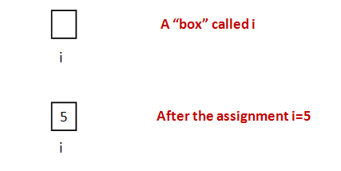
An array:
Activity 1:
Modify the above program (
MyArrayExample1.java)
to include a sixth element so that the elements
in order are:
36, 25, 16, 9, 4, 1. Print
the elements and the array length.
Let's look at a few details carefully:
- First, the declaration:
- It starts with the type of value in
each location of the array. Here: int.
- Then the square brackets together.
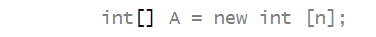
- Finally, the array variable name. Here it's A.
⇒ This is a name we chose.
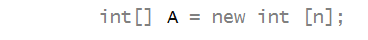
- Next, unlike int's or double's,
we need to explicitly create space for arrays:
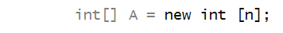
- Uses the reserved word new:
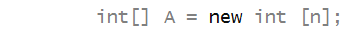
- Recall: reserved words are words in the language that can't
be used as variable names, method names and the like.
- This is followed by the type (here, int):
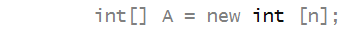
- Which is followed by the desired size in square brackets:
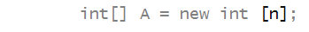
- Note: the value of the int in n is
used for the array size.
- So, when do we use
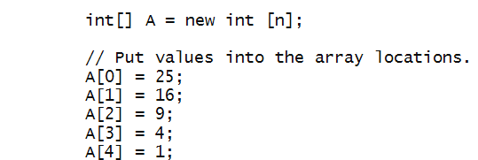
versus
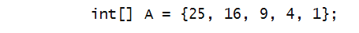
- Use the latter for small arrays when all the array
contents are known ahead of time.
- Use the former in all other cases.
- The value used to access one of the array locations
is called an array index:
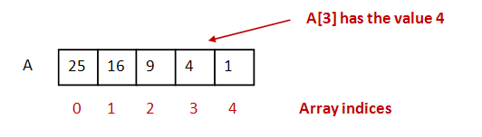
- The first location always has index 0.
- If the size is n, the last index is n-1.
- An array index is always a non-negative integer between 0
and the size of the array minus 1.
- Every array variable has an associated
length:
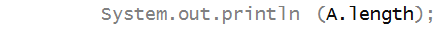
- This length is an integer.
- Note: the length is NOT the last index.
⇒ It is one more than the last index.
- The length will be useful later.
- In the example above, we (laboriously) wrote a println
for each array element.
⇒ We'd never do this in practice: instead, we'd use a
for-loop (see next section).
How to read aloud:
- When you see
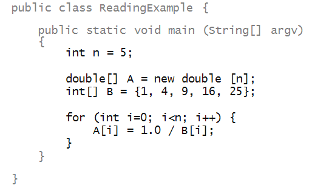
say to yourself
- Oh, A is an int array.
- Its space of n elements has been created
with the new operator.
- The values inside
of A aren't yet initialized.
- B is another array
fully initialized to 5 values.
- In the for-loop where i runs from 0 to n, "A's of i" is assigned
1 over "B's of i".
- When you see
A[0] = 25;
say to yourself any of the following:
- "A zero is assigned 25"
- "A of zero is assigned 25"
- "A's of zero is assigned 25" or
- "A0 (sub zero) is assigned 25".
Let's now deliberately make a mistake to see what
happens: we'll use an index that's "out of bounds"
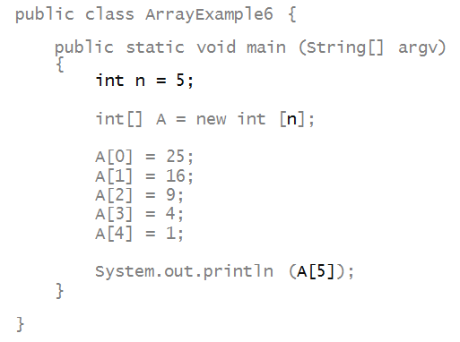
Activity 2:
Try printing A[6] in MyArrayExample1.java.
Arrays and for-loops
Arrays go hand-in-hand with for-loops.
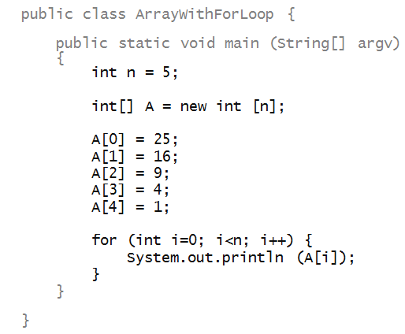
- Note that the loop variable is used as the array index:
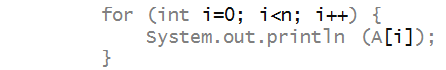
- Here, the loop variable i takes values
0, 1, 2, 3, 4 in successive iterations.
- For example, in the third iteration
- i is 2.
- Therefore, A[2] is given to
System.out.println.
- The value of A[2] is 9 (third element).
- The value printed is therefore 9.
We can use for-loops for filling in the elements of
an array, e.g.,
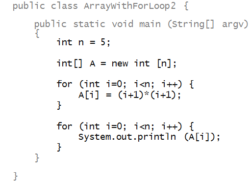
Here, we are cleverly using the for-loop variable i
for two different purposes:
- One is to serially traverse the array (the second for-loop).
- The other purpose is to use its value in an arithmetic expression,
whose value is eventually stored in the array (first for-loop).
Activity 3:
Trace through the first for loop iteration by iteration,
and draw the entire contents of the array at each step.
You can use paper and pencil or the Java Visualizer!
Activity 4:
In a file called MyArrayWithForLoop.java,
modify the above program
to include a sixth element, 36.
Activity 5:
In a file called MyArrayWithForLoop2.java,
change the order of elements so that the order is:
36, 25, 16, 9, 4, 1. That is, the first element
in the array (A[0]) is 36, the second is
25 ... etc. Print the elements.
Activity 6:
In MyArrayWithForLoop3.java,
change the printing for-loop
from MyArrayWithForLoop.java,
to print the elements in
reverse order (starting with A[5]).
Arrays of double's
Consider the following example:
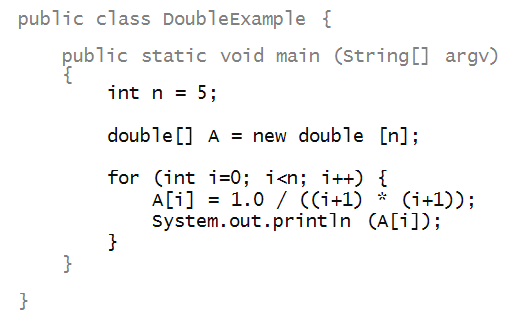
- Here, we have declared an array variable A
for an array of double values:
- And created space for it (5 slots):
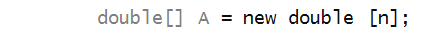
- Then, we assigned values in a for-loop:
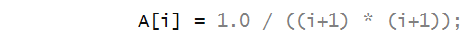
- And used those values in printing:
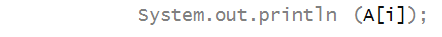
Activity 7:
In MyDoubleExample.java,
modify the above code to compute the sum (of the
first n terms) of the series
s = 1 + 1/22 + 1/32 + ... + 1/n2.
Then, compute the value 6s (6 times s) and find its square root
using Math.sqrt() (remember?)
Try this for different and possibly values
of n, finally submitting your program with n set to 100.
What do you think the square root of 6s
turns out to be for large n?
Default values
Consider this program:
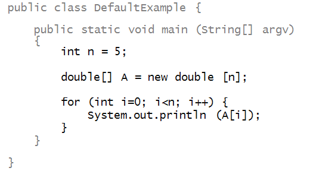
Activity 8:
What does the above program print?
Write it up in
DefaultExample.java,
What do you conclude
about the default values placed inside an array?
Is it the same for integer arrays?
Assignment and copying with arrays
Consider the following program:
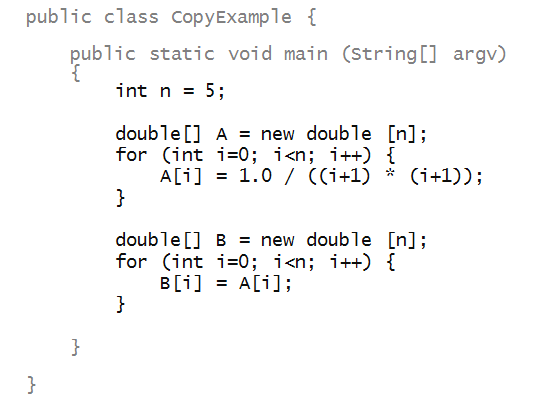
- Here, we have created a second array B:
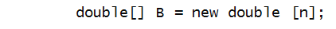
- Each element is copied one by one:
Activity 9:
Trace through both for-loops
showing, step-by-step in pictures, how elements get
copied from one array to the other.
Now for something strange
Look at this code:

Activity 10:
What does the program print? Write it up in
CopyExample2.java
and see.
Then, draw the box pictures for both arrays and see if that
explains the result.
About array copying and assignment:
- Yes, it's a little strange.
- When array variables are used in direct assignment, as in
- The variable B gets associated with the
same array space as A's.
- We say that "A and B
point to the same array space".
- This is why B[0] and A[0] are
the same "box".
- This is true for the other slots.
- For example, B[1] and A[1] are
the same "box" too.
Activity 11:
Does it work the other way around?
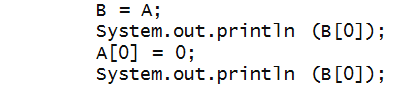
What gets printed out?
Activity 12:
Consider this program:
public class CopyExample3 {
public static void main (String[] argv)
{
int n = 5;
double[] A = new double [n];
for (int i=0; i<n; i++) {
A[i] = 1.0 / ((i+1)*(i+1));
}
// What is the value of A[0] here?
System.out.println (A[0]);
// Something strange:
System.out.println (A);
double[] B = new double [n];
A = B;
// What is it here?
System.out.println (A[0]);
// Weirdness once again:
System.out.println (A);
System.out.println (B);
}
}
Activity 13:
Write this up in CopyExample3.java.
What gets printed out? Explain the different values of
A[0].
Explaining the strangeness of arrays: a peek under the hood
Let's focus on three aspects of arrays that seem to beg
explanation:
- Why do array indices start from 0?
⇒
That is, why start with A[0]
and not
A[1]?
- How come when one array variable is assigned to another,
both seem to affect the same contents?
// An array A:
int[] A = {25, 36, 49, 64};
// An array B:
int[] B;
// What appears to be a copy:
B = A;
// Prints 25 as expected:
System.out.println (B[0]);
B[3] = 16;
System.out.println (A[3]); // Prints 16 (unexpectedly)
// implying that A[3] has been changed to 16
Why exactly, when we set the first entry of
B
to
0
did the first entry of
A
also get set to
0?
- What are those strange things printed out when we have
// Something strange:
System.out.println (A);
To understand why, we're going dig a little deeper:
- Remember the "boxes" idea?
- Variables like
int i = 5;
have a box in memory. Here, the value
5
gets into the box.
- We'll now understand these "boxes" in a little more detail.
- Think of a computer's memory as a long list of boxes,
where each box has a number:
- A box's number is like the number of a apartment mailbox.
- The numbering starts from 0 and goes up to the size of
the memory (which can be quite large).
- Every variable lives somewhere in memory.
- Let's use this example to further explain:
// A simple 4-element array of integers:
int[] A = {25, 36, 49, 64};
// Declare B, assign it A
int[] B = A;
// Use a for-loop to print B
for (int i=0; i<4; i++) {
System.out.println (B[i]);
}
// Modify the 4-th element of B:
B[3] = 81;
// Print the 4-th element of A:
System.out.println (A[3]); // Prints 81
- First, let's examine this conceptual picture of memory:
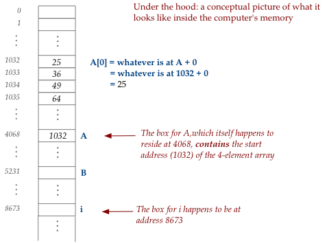
- Examine the box for
i:
- It so happens that this particular time
(the Java system determines this) that
the box for
i:
is at location 8673.
- This location can change with every new execution of the
program but stays fixed during an execution.
- When the for-loop executes, this is where the values
0,1,2,3
will live, as the iterations proceed.
- Now, the box for
A
is a little different:
- Inside the box is an address of another box: 1032.
- If we look at box #1032, we see that that is where the
first element of the array
25
happens to reside.
- This is no coincidence. It is by design.
- Next, notice that all the array elements of
A
are contiguous, one after another.
This too is by design.
- To access array elements, what really happens under the
hood is this:
- The first element,
A[0],
is at 1032 + 0.
- The second element,
A[1],
is at 1032 + 1.
- The third element,
A[2],
is at 1032 + 2.
- And so on.
- We don't do this in our program, but underneath, that
is what Java is doing when the program runs.
- In fact, in a for-loop, the i-th element,
A[i],
would be found at 1032 + i.
- So, the computer "goes" to location 1032 + i
to fetch its contents as
A[i].
Next, let's consider what happens when
int[] A = {25, 36, 49, 64};
int[] B;
B = A;
System.out.println (B[0]);
gets executed.
- The state of memory is now:
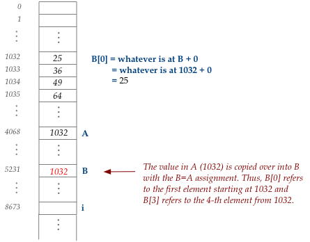
- Here, we say "B points to the same place A is pointing to".
- That place is the start of the actual array contents (1032
in this case).
- Thus, when we execute the println
int[] A = {25, 36, 49, 64};
int[] B;
B = A;
System.out.println (B[0]);
B
has the value 1032 and so
B[0]
refers to the first element, which means 25 gets printed out.
Next, consider what happens next:
int[] A = {25, 36, 49, 64};
int[] B;
B = A;
System.out.println (B[0]);
B[3] = 16;
System.out.println (A[3]);
- The assignment
B[3] = 16
changes the 4-element of the array "pointed to" by
B.
- So, the picture of memory now becomes:
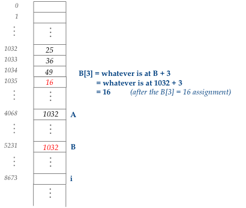
- Thus, the value in
A[3]
is now 16.
Lastly, what was that strange output we saw when we executed
// Something strange:
System.out.println (A);
- What we see is the address in
A
being printed out.
- If the address were actually 1032 (as in our picture)
that is what would get printed out.
- However, Java's address list is quite large and most
addresses have many digits (not four as in 1032).
- In fact, it's so large that the decimal system proves
inconvenient, which is why hexadecimal numbers (base 16)
are used. These have the letters a,b,c,d,e,f in them.
- We don't need to understand how "hexadecimal". Just think
of those as addresses, like a mailbox address.